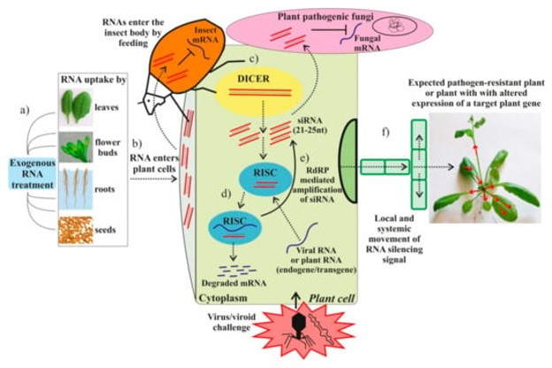

Silenciamiento de genes
El silenciamiento génico se conserva en las células eucariotas y se inicia por la presencia de RNA de doble cadena (dsRNA) en la célula vegetal. El silenciamiento de ARN desempeña un papel fundamental en la defensa antiviral (D. C. Baulcombe 2022). Diversas investigaciones han demostrado que el silenciamiento de genes es importante en interacciones entre plantas y bacterias, entre plantas y hongos, entre plantas y oomicetos y, potencialmente, entre plantas y nematodos. Cuando un patógeno es reconocido por los genes R a través de patrones moleculares asociados a patógenos (MAMP) o proteínas efectoras, eventos posteriores como el silenciamiento de genes regulan la expresión genética y la inmunidad de las plantas (Parperides, El Mounadi, and Garcia-Ruiz 2023). La interferencia de ARN es un mecanismo de silenciamiento en plantas, que permite regular la expresión de genes endógenos, silenciar transposones y defenderse contra infecciones virales (D. Baulcombe 2004).
El ARNi (ARN de interferencia) en las plantas se activa mediante moléculas dsRNA que se dividen mediante endonucleasas tipo Dicer (DCL) en ARN de interferencia pequeño (siRNA) de 21 a 24 nt que tiene la particularidad de reconocer y cortar el dsRNA en lugares específicos. Existen moléculas como los micro RNA (miRNA) se cargan en proteínas argonauta (AGO) y forman parte del complejo silenciador inducido por RNA (RISC) que silencia genes cortando objetivos de ARN mensajero (ARNm) y evitan la traducción (Parperides, El Mounadi, and Garcia-Ruiz 2023).
Al acoplamiento de enzimas que se involucradas en el mecanismo de ARNi se le denomina complejo RISC, el cual media el silenciamiento del ARNm a través de su degradación o inhibición de la traducción. Comúnmente la producción del miRNA ocurre en el núcleo de la célula a partir de un pre miRNA transcrito, cuya longitud de secuencia es de al menos 1000 nucleótidos, que conforman horquillas complementarias ya sea sencillas o dobles, y complementan secuencias simples (dirección 5’-3’) (Saini, Griffiths-Jones, and Enright 2007).
Aplicacion de dsRNA
Se han desarrollado técnicas de aplicación de dsRNA, pero una de las técnicas más sencillas es la pulverización foliar a baja presión, posterior a la aplicación, donde el dsRNA permanece en gran medida en la superficie de la hoja y se degrada rápidamente o se elimina por lavado (Dalakouras and Papadopoulou 2020). Para facilitar la entrada del dsRNA en el tejido de la hoja, se pueden emplear varias formulaciones, como nanoarcillas de LDH o puntos de carbono (Mitter et al. 2017). En el caso de las plantas leñosas, el dsRNA puede administrarse mediante inyección en el tronco, transportarse exclusivamente a través del xilema y permanecer en el apoplasto de la planta, donde no existen Dicers (DCL) ni se produce ARNi (Dalakouras, Koidou, and Papadopoulou 2024). Se ha estimado que se necesitarían aproximadamente 10 g de dsRNA por hectárea para estrategias de manejo de insectos a escala de campo (Joga et al. 2016). La cantidad de dsRNA puede variar según la sensibilidad del insecto objetivo al ARNi y su capacidad (Mehlhorn et al. 2021). Generalmente, los métodos de pulverización, infiltración, inyección, esparcimiento y remojo de raíces se han utilizado ampliamente para el dsRNA exógeno de aplicaciones directas a plantas (Das and Sherif 2020). La longitud y concentración requeridas de dsRNA difieren enormemente entre plagas de insectos , estudios informan que el dsRNA de 140 a 150 pb induce el ARNi. Además, para reducir la homología de secuencia del dsRNA diseñado para efectos fuera del objetivo y especies no objetivo, se considera ideal un dsRNA corto (Huvenne and Smagghe 2010). Se ha estimado que aproximadamente el 40% de todos los genes de insectos son esenciales, por lo que su eliminación conduciría a la letalidad en cualquier etapa (Schmitt-Engel et al. 2015). Por lo tanto, el desafío podría no ser identificar un gen esencial, sino identificar qué gen supresión resultaría en una letalidad rápida en dosis bajas de dsRNA (Mehlhorn et al. 2021). Cabe mencionar que los dsRNA pueden producirse mediante métodos de transcripción in vitro o in vivo , se pueden utilizar varios kits comerciales (por ejemplo, el kit MegaScript RNAi). Este dsRNA suele ser muy puro y específico, pero la reacción puede ser bastante cara, además el método de purificación del dsRNA también puede ser un problema, el uso de materiales como el cloruro de litio para la extracción de ARN, puede causar toxicidad (Mehlhorn et al. 2021).
Aplicaciones del silenciamiento genético en plantas

En la imagen podemos apreciar el modelo del funcionamiento del silenciamiento por dsRNA, el cual introduce estos pequeños fragmentos vía tópica para así poder indicar el silenciamiento mediante RNAi en los agentes patógenos objetivo.